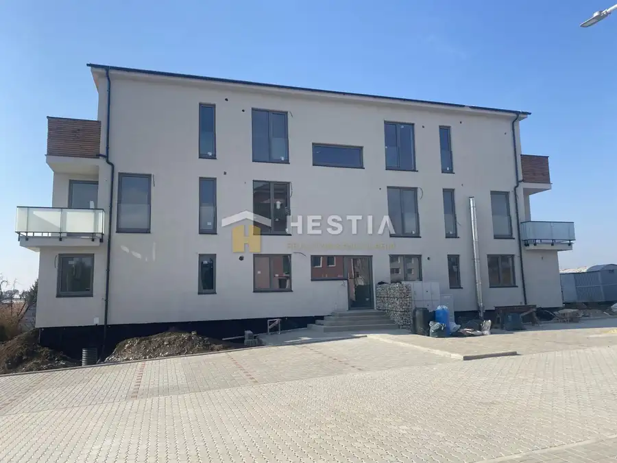
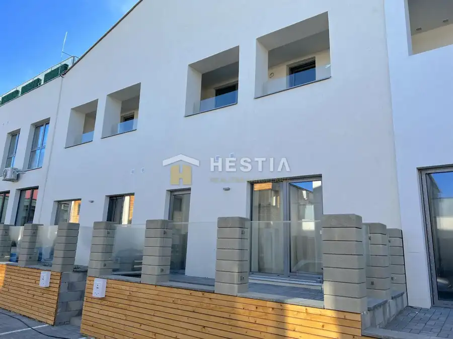

NA PREDAJ 3-izb.byt, novostavba BD1, Petrova Ves
Petrova Ves
- Dispozícia3-izbový
- Plocha56 m²
- Stavpôvodný
- Vlastníctvofiremné
O nehnuteľnosti
Hľadáte pokojné miesto pre svoje bývanie? Láka vás bývanie v novostavbe? V tom prípade je bývanie v projekte „Malé Pole“ v dedinke na Záhorí, v Petrovej Vsi tou správnou voľbou! Projekt v sebe nesie nadčasovosť, moderný štýl, minimalizmus a je určený pre tých, ktorí hľadajú bývanie s jedinečným dizajnom, najmodernejšími technológiami a súčasne sa chcú obklopiť tichým a príjemným prostredím. O PROJEKTE: Projekt tvoria 3 BYTOVÉ DOMY, z ktorých prvý Bytový dom je už postavený a ďalšie 2 BD sú vo výstavbe. BYTOVÝ DOM 3 - pozostáva z 10 bytov, ktoré sú už VYPREDANÉ! BYTOVÝ DOM 2 bude pozostávať zo 6 bytov - momentálne vo výstavbe poskytuje nadštandardný komfort a moderné technológie s dôrazom na aktuálne trendy a potreby pri vstupe do bytového domu Vás víta moderná technológia na odtlačok prsta alebo kód má vlastnú kotolňu a správu, čo v kombinácii s podlahovým kúrením a rekuperáciou v byte zabezpečuje majiteľom nízke prevádzkové náklady spoločný skladový priestor Byty sa predávajú v prevedení HOLOBYT, čo umožňuje dotvoriť si ho podľa vlastných predstáv. K dispozícii sú nasledujúce byty nachádzajúce sa na , 1.NP, 2.NP, 3.NP v BD 1 výmera 80,9 m2 - 3 KK byt nachádzajúci sa na 1.NP - cena: 120.280,-€ HOLOBYT DISPOZÍCIA: vstupná chodba s bohatým úložným priestorom, oddelená denná a nočná časť bytu, kuchyňa prepojená s obývacou časťou a vstupom na terasu podlahové kúrenie s vlastnou reguláciou na ventiloch klimatizačná jednotka v byte ovládanie svetiel a kúrenia v byte je prostredníctvom Smart home systému zásuvky, vypínače, dátová zásuvka byt je dostatočne presvetlený vďaka kvalitným francúzskym plastovým oknám s izolačným trojsklom vo farebnom prevedení antracit VÝHODA: parkovacie miesto k bytu Cena 3- KK bytu v stave HOLOBYT – 99.099,-€ s DPH / na 3.NP V ponuke máme aj iné dispozície a výmery, rozličné podlažia, neváhajte ma osloviť pre ponuku. Zostáva už len pár bytov, ktoré sú voľné!!! LOKALITA ponúka viacero možností na aktívny oddych v prírode /cykloturistika, hubárčenie/ Zároveň poskytuje kompletnú občiansku vybavenosť- škola, škôlka, potraviny, pošta, lekáreň, zdravotné stredisko. Obec sa nachádza na trase Senica 20 km, Skalica 18 km, Holíč 10 km, Hodonín 16 km. Ak máte záujem o bližšie informácie neváhajte ma kontaktovať na telefónnom čísle – .
Parametre
| Úžitková plocha | 56 m² |
|---|---|
| Počet izieb | 3 |
| Vlastníctvo | firemné |
| Stav | pôvodný |
| Postavené z | Zmiešané |
| Dátum zverejnenia | 5. 4. 2026 |
Kde to je
Mohlo by Vás zaujímať

Byt10 95 300 €NA PREDAJ novostavba BD2, 3-KK byt, Petrova Ves Petrova Ves 3-izbový58 m² Hľadáte pokojné miesto pre svoje bývanie? Láka vás bývanie v novostavbe? V tom prípade je bývanie v projekte „Malé Pole“ v dedinke na Záhorí, v…
Byt10 138 151 €Na predaj 2-izb.byt, terasa, priamo pod Rotundou, Skalica Skalica 2-izbový65 m² V zastúpení majiteľa ponúkame na predaj 2-izbový byt s predzáhradkou v projekte PRÍJEMNÉ BÝVANIE POD ROTUNDOU v meste Skalica. Bytový dom poskytuje… Byt10
74 630 €NA PREDAJ 2-izb.byt, novostavba BD1, terasa, Petrova Ves
Petrova Ves
2-izbový44 m²
Hľadáte pokojné miesto pre svoje bývanie? Láka vás bývanie v novostavbe? V tom prípade je bývanie v projekte „Malé Pole“ v dedinke na Záhorí, v…
Byt10
74 630 €NA PREDAJ 2-izb.byt, novostavba BD1, terasa, Petrova Ves
Petrova Ves
2-izbový44 m²
Hľadáte pokojné miesto pre svoje bývanie? Láka vás bývanie v novostavbe? V tom prípade je bývanie v projekte „Malé Pole“ v dedinke na Záhorí, v…